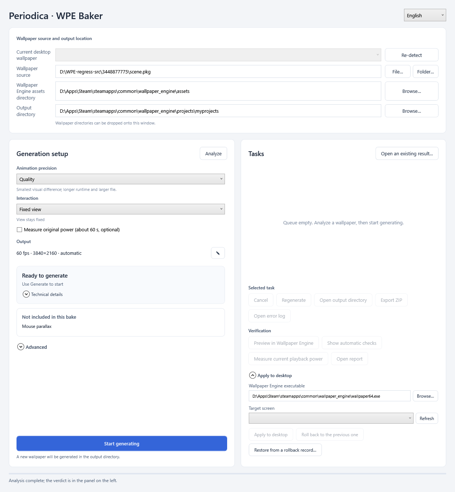

Your wallpaper renders forever.
Bake it once.
Periodica builds mathematical models of Wallpaper Engine animations, coordinates the periods of the parts it can bake, and plays the resulting seamless loop as video. Clocks, audio response and other live content can stay in the scene, preserving the animated look while reducing repeated rendering. Its first application is WPE Baker, for Wallpaper Engine.
Back to the same moment.
Frame-comparison tools look for repetitions in the images; Periodica analyzes the mathematical relationships behind the animation, coordinating shader time, animation tracks, particle cycles and video timebases to solve loops for the content it can bake. Independent video groups can use their own periods without waiting for the entire scene to return to its starting state. Drag the divider to compare the first and last frames of the loop above.

 frame 1frame 3,000
frame 1frame 3,000
Different periods. Periodica coordinates their loops.
A wave repeats every 7.3 s, a sway every 11.1 s, a particle cycle every 4.6 s and a video every 20 s. They may take too long to return to their starting states together for a practical video loop. Periodica solves each component’s period, then adjusts its playback speed within the selected budget so animations that need to play together form a seamless loop.
Control how much the animation changes
The three precision presets set a visible-change budget: Efficiency allows up to 5%, Balanced up to 3%, and Quality finds the smallest change that still closes the loop. The program favors smaller adjustments and reports the periods and speed changes it actually uses.
Keep retiming visually subtle
Each component has its own adjustment limit. For very slow motion, the program also considers displacement and changes in speed when checking whether a loop can close. Content that cannot meet the conditions stays live, with the layer and reason listed in the report.
Verify loop seams against the original scene
During generation, the program renders extra frames around the loop point, checks the encoded seam and compares the assembled result of baked content and live layers. Outputs are accepted once the corresponding checks pass.
Drop a scene in, get a verdict.
Two settings, one analysis result. Animation precision limits how much the animation can be retimed; Interaction controls how mouse and audio effects are handled. More settings are available under Advanced.
Drop the wallpaper folder in
From steamapps\workshop\content\431960. The output directory is Wallpaper Engine's own project folder, so the result appears in its list.
Animation precision · Interaction
Quality, Balanced and Efficiency set different visible-change budgets; Balanced is the default. If the current precision setting cannot produce a closed loop, the analysis tries the next precision preset and reports the one it selects. Interaction offers Keep, Fixed view and Off for mouse and audio effects. Clocks, dates and media text stay live in every mode.
Read the verdict
The result is one of four states. "Not included in this bake" lists the content excluded from baking. If the current settings cannot close the loop but another combination can, the report offers a suggestion you can apply with one click.

The cost of repetition.
Measurements use an Intel Arc B390 laptop and the official Wallpaper Engine player, alternating the original scene and baked output in A/B/B/A order. Outputs use 1920×1080 at 60 fps, Balanced precision and default wallpaper properties; originals render normally on the 3072×1920 screen. iGPU and CPU-package power are recorded separately.


| Wallpaper | Original iGPU | Baked iGPU | Change | CPU package: original → baked |
|---|---|---|---|---|
| Nijika (Bocchi the Rock!)3650475846 | 20.87 W | 14.63 W | −29.9% | 31.80 → 26.51 W |
| Alone (day/night scene)3448877775 | 5.52 W | 4.81 W | −12.8% | 15.45 → 16.17 W |
| Atri — My Dear Moments3669681034 | 8.51 W | 0.27 W | −96.8% | 17.85 → 9.26 W |
| Ultraman Leo3685247684 | 9.08 W | 1.44 W | −84.1% | 19.58 → 11.58 W |
| Yuri3572877776 | 2.10 W | 0.48 W | −77.4% | 11.59 → 9.45 W |
| Frieren — Pagoda of flowers3426865175 | 10.57 W | 7.23 W | −31.6% | 19.62 → 19.64 W |
| Lost Landscape 33713073223 | 8.10 W | 3.30 W | −59.2% | 17.96 → 13.61 W |
| Ayanami Rei3258032485 | 2.16 W | 0.14 W | −93.4% | 11.23 → 8.72 W |
High refresh rates. Lower power use.
As playback frame rate rises, the original scene has to render more images in real time. Baking periodic animation into video lets the video decoder handle that part of playback, reducing repeated work on the 3D engine. Retained clocks, audio response and other live content continue to run as before.
This project began on a laptop with an iGPU.
| Wallpaper / frame rate | Original iGPU | Baked iGPU | Change | CPU package: original → baked |
|---|---|---|---|---|
| Atri · 60 fps | 8.50 W | 0.30 W | −96.5% | 16.53 → 9.33 W |
| Atri · 165 fps | 25.55 W | 2.19 W | −91.4% | 37.67 → 12.84 W |
| Ayanami Rei · 120 fps | 8.75 W | 1.97 W | −77.5% | 18.62 → 13.72 W |
Bake periodic motion.
Handle interaction and live content separately.
Baked into the loop
- Shader animation with a provable period — waves, sways, pulses, scrolls
- Animation tracks, sprite sheets, particle cycles
- Embedded video loops and their timebases
- Static art, at full resolution
Interactive and live content
- Mouse parallax and pointer effects
- Audio-reactive effects and spectrum displays
- Clocks, dates and day/night switching
- Interactive panels and custom scripts
Interaction offers three modes: Keep, Fixed view and Off. Fixed view is the default.
Clocks, dates and media text update live in every mode. Keep is experimental and may increase GPU load.
From period analysis to offline rendering.
A Wallpaper Engine scene can contain hundreds of shader variants, particle systems, script controllers and video layers. Finding two similar frames is not enough to bake them into a loop: the program needs to know how animation changes over time, and which parts must keep responding to live input.
2.0 replaces the old library of period equations with shader time analysis. It applies abstract interpretation to the compiled SPIR-V, following time through the data flow to derive cycles, continuous drift and animation that settles after a while. New effects no longer need a hand-written equation of their own; unfamiliar custom shaders can be analyzed too.
Once the periods are known, the program looks for parameters it can adjust locally. Waves, glows and scrolling within one effect no longer have to speed up together. Independently adjustable motion will be coordinated separately, and independent video groups will loop at their own periods.
Author scripts are also included in time analysis. Constants, periodic changes and opening animations can be identified; where state carried between frames can be simulated exactly, the program searches for that state to recur. Content that depends on the mouse, audio or the clock stays live.
To put the baked result back into the original scene, Periodica also handles transparency, blending order and HDR intermediate images. Brightness outside ordinary video range is mapped into the video and restored by a generated shader, so cached content can continue through the author’s existing effect chain.
The offline renderer uses Vulkan and reduces readbacks, intermediate files and repeated encoding. Supported GPU paths encode images directly from GPU memory; other paths stream rendering into encoding. Seam, image-quality, composition and hardware-decoding checks run as part of generation.
The next screen.
Wallpaper Engine, Windows
Bake repeating scene animation into video and place it back alongside retained live content. Wallpaper Engine is Periodica’s first application area.
Performance update
Replace individually maintained period equations with shader and script time analysis, expanding the range of animation that can be baked. Give independent video groups their own loops, improve HDR intermediate-image handling, and reduce readbacks, repeated encoding and waits during generation.
General-purpose baking
Use caching, reuse, precomputation and deterministic replay to bring more real-time layers within practical baking range, including a new AI-accelerated generation pipeline.
Temporal reconstruction
Use history and motion information to reconstruct frames, reducing the work of rendering each frame from scratch, and explore cooperation between the GPU and NPU.
Short answers.
What is the main benefit?
Run your favorite animated wallpaper with lower power use.
Will it reduce resource use for every wallpaper?
Lightweight scenes offer little room for savings, and the tool tells you before rendering. Heavy scenes dominated by periodic animation are where the 13–97% reductions come from. For scenes with extensive interaction, the deterministic core is baked while interactive and live content is handled separately.
Does the loop look different from the original?
Choose Efficiency, Balanced or Quality to set the visible-change budget. The report lists every retimed component and its exact adjustment percentage. Each seam is checked against the original scene's motion before the output is accepted.
What do I need?
Windows, Wallpaper Engine, and a GPU for the offline render. The portable build has no installer and no Python. Baking a typical scene takes minutes; the video decoder handles baked content while retained live layers continue rendering.
Is it open source?
Yes. Tooling under MIT, the renderer under GPL v2; full source, third-party notices and build records are in the repository.